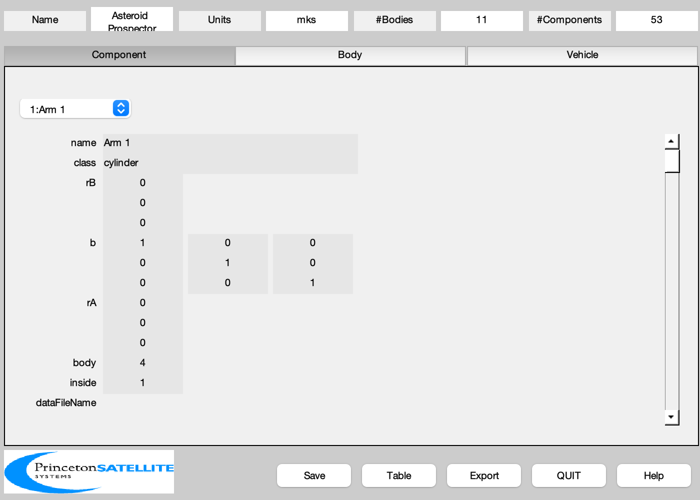
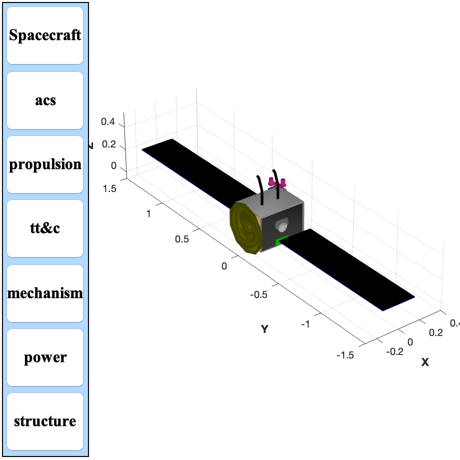
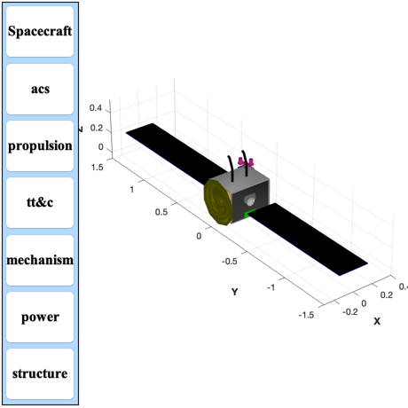

Build the CAD model of the Asteroid Prospector spacecraft.
This demo illustrates the construction of a comprehensive spacecraft capable of visiting asteroids and performing geology tasks using a pair of robot arms. The thruster layout is previously saved in RCS-AsteroidProspector.mat.
See also BuildCADModel, CreateBody, CreateComponent, CreateReport, ExportOBJ, ICONS, PanelFrame, ThrusterPatch, XenonTank, Constant, FileFullpath, ShapedStrut, Date2JD, Product, AddRobotArm, DesignAsteroidProspector
Contents
%-------------------------------------------------------------------------- % Copyright (c) 2012 Princeton Satellite Systems, Inc. % All rights reserved. %-------------------------------------------------------------------------- % Since version 10. % 2015.1: Renamed, previously named BuildAsteroidSat.m %--------------------------------------------------------------------------
Design the mission
------------------
% Mission date % ----------- date = [2015 5 7 0 0 0]; jD = Date2JD(date); % Total mass %----------- mTotal = 27; % 3U x 3U x 3U mF = 15; % kg Xenon % Propulsion %----------- rhoRCS = 1240; % HPGP propellant rhoXenon = 2750; % One u is 10 cm %----------------- u = 0.1; zBox = 3*u; xBox = 4*u; yBox = 3*u; busDim = sprintf('%4.1f $\\times$ %4.1f $\\times$ %4.1f',xBox*100,yBox*100,zBox*100); % Size data for components %------------------------- massOmni = 0.2; powerOmni = 2; xOmni = [xBox -yBox; yBox yBox; zBox zBox]; rOmni = 0.002; c = Constant('speed of light'); fComm = 34e9; lOmni = 0.5*c/fComm; dThruster = load('RCS-AsteroidProspector.mat'); massThruster = 0.37/2; powerRCS = 1; dimProc = [0.09 0.095 0.6*0.0254]; massBoard = Product(dimProc)*2700; nBoards = 5; powerBoard = 4; powerRWA = 2; nRWA = 3; wRWA = 0.04; massRWA = 0.1; xRWA = [ xBox/2-wRWA -xBox/2+wRWA -xBox/2+wRWA;... -2*wRWA 0 2*wRWA;... wRWA/2 wRWA/2 wRWA/2]; panelThickness = 0.004; inToM = 0.0254; strutLength = yBox/2; nPanels = 4; panelLength = 0.3; panelWidth = 0.3; solarPanelEff = 0.295; zSolarWing = zBox/2; yPanel = strutLength + yBox/2; % RCS %----- mFRCS = 1.7; vRCS = mFRCS/rhoRCS; rRCS = (0.75*0.5*vRCS/pi)^(1/3); % Two tanks rTank = [-xBox/2+rRCS xBox/2-rRCS;... yBox/2-rRCS -yBox/2+rRCS;... rRCS rRCS]; % Battery %--------- volumeBattery = 1.8; % L % Solar arrays %------------- arrayMass = 9; bX = [ 1 0 0;0 0 -1;0 1 0]'; bY = [-1 0 0;0 1 0;0 0 -1];
Initialize
%------------ BuildCADModel( 'initialize' ); BuildCADModel( 'set name' , 'Asteroid Prospector' ); BuildCADModel( 'set units', 'mks' );
Bodies
%--------- % Core %----- m = CreateBody('make','name','Core','rHinge',[0;0;0],'bHinge',eye(3)); BuildCADModel('add body', m ); m = CreateBody('make','name','SolarWing1','rHinge',[0;0;0],'bHinge',eye(3),... 'previousBody',1); BuildCADModel('add body', m ); m = CreateBody('make','name','SolarWing2','rHinge',[0;0;0],'bHinge',eye(3),... 'previousBody',1); BuildCADModel('add body', m ); % Add robot arm %------------------ k = 1; link(k).u = [0;0;1]; link(k).r = [0;0;0.02]; link(k).mass = 0.02; link(k).radius = 0.01; link(k).b = eye(3); link(k).power = 1; link(k).name = 'shoulder'; k = k + 1; link(k).u = [1;0;0]; link(k).angle = 0; link(k).r = [0;0;0.1]; link(k).mass = 0.1; link(k).radius = 0.01; link(k).b = eye(3); link(k).power = 1; link(k).name = 'upper arm'; k = k + 1; link(k).u = [1;0;0]; link(k).angle = pi/8; link(k).r = [0;0;0.1]; link(k).mass = 0.1; link(k).radius = 0.01; link(k).b = eye(3); link(k).power = 1; link(k).name = 'fore arm'; k = k + 1; link(k).u = [1;0;0]; link(k).r = [0;0;0.02]; link(k).angle = pi/4; link(k).mass = 0.02; link(k).radius = 0.01; link(k).b = eye(3); link(k).power = 1; link(k).name = 'wrist'; AddRobotArm( 'add bodies', 1, 4, [ yBox/4;0;zBox], link ); AddRobotArm( 'add bodies', 1, 8, [-yBox/4;0;zBox], link ); % This creates the connections between the bodies %------------------------------------------------ BuildCADModel( 'compute paths' );
Components
AddRobotArm( 'add components', 1, 4, [ yBox/4;0;zBox], link ); AddRobotArm( 'add components', 1, 8, [-yBox/4;0;zBox], link ); % Solar Array 1 %--------------- m = CreateComponent( 'make', 'solar array front', 'z', panelLength, 'x', panelWidth,... 'nZ', nPanels, 'nX', 1, 'dirZ', 1, 'inside', 0, ... 'theta', 0, 'electricalConversionEfficiency', solarPanelEff, 'b', bY*bX,... 'rA', [0;yPanel;zSolarWing], 'mass', arrayMass/2, 'cM', [0;0;0],... 'name', 'Solar Array +Y Front', 'body', 2, 'faceColor', 'solar cell' ); BuildCADModel( 'add component', m ); m = CreateComponent( 'make', 'solar array back', 'z', panelLength, 'x', panelWidth,... 'nZ', nPanels, 'nX', 1, 'dirZ', 1,... 'theta', 0, 'b', bY*bX, 'inside', 0, ... 'rA', [0;yPanel;zSolarWing], 'mass', arrayMass/2, 'cM', [0;0;0],... 'name', 'Solar Array +Y Back', 'body', 2, 'faceColor', 'black' ); BuildCADModel( 'add component', m ); % Solar Array 2 %--------------- m = CreateComponent( 'make', 'solar array front', 'z', panelLength, 'x', panelWidth,... 'nZ', nPanels, 'nX', 1, 'dirZ', 1,'inside', 0, ... 'theta', 0, 'electricalConversionEfficiency', solarPanelEff, 'b', bX',... 'rA', [0;-yPanel;zSolarWing], 'mass', 10, 'cM', [0;0;0],... 'name', 'Solar Array -Y Front', 'body', 3, 'faceColor', 'solar cell' ); BuildCADModel( 'add component', m ); m = CreateComponent( 'make', 'solar array back', 'z', panelLength, 'x', panelWidth,... 'nZ', nPanels, 'nX', 1, 'dirZ', 1,... 'theta', 0, 'b', bX','inside', 0, ... 'rA', [0;-yPanel;zSolarWing], 'mass', 10, 'cM', [0;0;0],... 'name', 'Solar Array -Y Back', 'body', 3, 'faceColor', 'black' ); BuildCADModel( 'add component', m ); % Solar array drives %-------------------- rD = [0 0;-yBox yBox;zBox zBox]/2; for k = 1:size(rD,2) n = sprintf('Solar Array Drive %d',k); m = CreateComponent( 'make', 'cylinder', 'rUpper', 0.04, 'rLower', 0.04, 'h', 0.01,'n',20,... 'inside', 0, 'b', [1 0 0;0 0 -1;0 1 0], 'rA', rD(:,k), 'mass', 0.1,... 'name', n, 'body', 1, 'faceColor', 'aluminum' ); BuildCADModel( 'add component', m ); end % Frame %------- [v, f] = PanelFrame( xBox, yBox, panelThickness, panelThickness ); m = CreateComponent( 'make', 'generic', 'vertex', v, 'face', f,... 'faceColor', 'aluminum','rA', [0;0;zBox-2*panelThickness],... 'mass', 10, 'name', 'Top Frame', 'body', 1, 'inside', 0 ); BuildCADModel( 'add component', m ); v = ([1 0 0; 0 1 0; 0 0 -1]*v')'; m = CreateComponent( 'make', 'generic', 'vertex', v, 'face', f,... 'faceColor', 'aluminum','rA', [0;0;2*panelThickness],... 'mass', 10, 'name', 'Bottom Frame', 'body', 1, 'inside', 0 ); BuildCADModel( 'add component', m ); z1 = 2*panelThickness; z2 = z1 + zBox-2*panelThickness; c = []; c.x = [ -0.250 0 0 0.250 0.250 0 0 -0.250]*inToM; c.y = [ 0.375 0.375 0.125 0.125 -0.375 -0.375 -0.125 -0.125]*inToM; [v, f] = ShapedStrut( [0;0;z1], [0;0;z2], c ); angle = 0; sX = [1 1 -1 -1]; sY = [1 -1 -1 1]; for k = 1:4 angle = angle + pi/2; xF = sX(k)*(xBox/2 - panelThickness/2); yF = sY(k)*(yBox/2 - panelThickness/2); b = [cos(angle) sin(angle) 0;-sin(angle) cos(angle) 0;0 0 1]; vR = (b*v')'; m = CreateComponent( 'make', 'generic', 'vertex', vR, 'face', f,... 'faceColor', 'aluminum','rA', [xF;yF;0], ... 'mass', 10, 'name', ['z strut' num2str(k)], 'body', 1,... 'inside',0 ); BuildCADModel( 'add component', m ); end % Panels %------- panelName = {'+X' '-X' '+Y' '-Y' '+Z' '-Z'}; color = {'gold foil' 'gold foil' 'radiator' 'radiator' 'aluminum' 'aluminum'}; xLoc = (xBox - panelThickness)/2; yLoc = (yBox - panelThickness)/2; zLoc = (zBox - panelThickness)/2; wX = xBox - 2*panelThickness; wY = yBox - 2*panelThickness; wZ = zBox - 2*panelThickness; th = panelThickness; zH = zBox/2; rAP = [xLoc -xLoc 0 0 0 0 ;... 0 0 yLoc -yLoc 0 0;... zH zH zH zH zBox 0]; dP = [th th wX wX wX wX ;... wY wY th th wY wY;... wZ wZ wZ wZ th th]; for k = 1:6 m = CreateComponent( 'make', 'box', 'x', dP(1,k), 'y',dP(2,k), 'z',dP(3,k),... 'faceColor', color{k}, 'rA', rAP(:,k), 'mass', 10,... 'name', ['Panel ' panelName{k}], 'body', 1,... 'inside', 0 ); BuildCADModel( 'add component', m ); end % Xenon fuel tank %----------------- [v, f] = XenonTank( mF ); m = CreateComponent( 'make', 'generic','vertex', v, 'face', f,... 'faceColor', 'steel' ,'rA', [0;0;0],... 'name', ['Xenon' ' tank'],'inside',1); BuildCADModel( 'add component', m ); % Batteries %----------- lToM3 = 0.001; xB = (volumeBattery*lToM3)^(1/3); rB = 0.5*([0;yBox;0] + [0;-xB;xB/2]); m = CreateComponent( 'make', 'box','x', xB, 'y', xB, 'z', xB/2,... 'faceColor', [0 1 0] ,'rA', rB,... 'name', 'Battery 1','inside',1); BuildCADModel( 'add component', m ); rB = 0.5*([0;-yBox;0] + [0;xB;xB/2]); m = CreateComponent( 'make', 'box','x', xB, 'y', xB, 'z', xB/2,... 'faceColor', [0 1 0] ,'rA', rB,... 'name', 'Battery 2','inside',1); BuildCADModel( 'add component', m ); % Antenna %----------- m = CreateComponent( 'make', 'ellipsoid', 'name', 'Antenna',... 'body', 1, 'abc', [0.3 0.3 0.1], 'thetaUpper',pi/4,'b',[0 0 1;0 1 0;-1 0 0],... 'n',10, 'rA',[-xBox/2-0.1;0;zBox/2], 'faceColor', [0.5 0.5 0], 'edgeColor',[1 1 1]); BuildCADModel('add component', m ); % Xenon Thruster %-------------------- m = CreateComponent( 'make', 'cylinder', 'rUpper', 0.02, 'rLower', 0.02, 'h', 0.03,'n',20,... 'inside', 0, 'rA', [0;0;-0.03], 'mass', 0.1,... 'name', 'Ion Thruster', 'body', 1, 'faceColor', 'aluminum' ); BuildCADModel( 'add component', m ); % Processors %------------ z = 0; xProc = 0.5*(xBox-dimProc(1)); yProc = 0.5*(yBox-dimProc(1)); for k = 1:nBoards m = CreateComponent( 'make', 'box', 'x', dimProc(1), 'y', dimProc(1), 'z', dimProc(3), 'rA',[xProc;yProc;z],... 'name', sprintf('Board %d',k), 'body', 1, 'mass', massBoard,'power',powerBoard, ... 'faceColor', [1 0 0], 'inside', 1); BuildCADModel( 'add component', m ); z = z + dimProc(3); end % Reaction wheels %----------------- for k = 1:nRWA m = CreateComponent( 'make', 'box', 'x', wRWA, 'y', wRWA, 'z', wRWA, 'rA',xRWA(:,k),... 'name', sprintf('RWA %d',k), 'body', 1, 'mass', massRWA,'power',powerRWA, ... 'faceColor', [1 1 0], 'inside', 1); BuildCADModel( 'add component', m ); end % Omni antennas %--------------- for k = 1:2 m = CreateComponent( 'make', 'cylinder', 'rUpper', rOmni, 'rLower', rOmni, 'h', lOmni, 'n', 24, 'rA',xOmni(:,k),... 'name', sprintf('Omni %d',k), 'body', 1, 'mass', massOmni,'power',powerOmni, ... 'faceColor', [0 0 0], 'inside', 1); BuildCADModel( 'add component', m ); end % Thrusters %----------- for k = 1:8 [v, f] = ThrusterPatch( dThruster.uThruster(:,k), 0.01, 0.02, 8, 1 ); m = CreateComponent( 'make', 'generic', 'vertex', v, 'face', f, 'rA', dThruster.rThruster(:,k),... 'name', sprintf('Thruster %d',k), 'body', 1, 'mass', massThruster, 'power',powerRCS,... 'faceColor', [0.4 0.4 0.4], 'inside', 1); BuildCADModel( 'add component', m ); end % RCS Fuel tanks %---------------- for k = 1:size(rTank,2) m = CreateComponent( 'make', 'fuel tank','name', 'Fuel Tank',... 'body', 1,'radius', rRCS,'mass',mFRCS/2,... 'rA',rTank(:,k), 'faceColor',[0.7 0.7 0.7]); BuildCADModel( 'add component', m ); end % ICONS sensor and deployment box %--------------------------------- [v, f] = ICONS; massICONS = 0.5; wICONS = 0.1; m = CreateComponent( 'make', 'generic', 'vertex', v, 'face', f, 'rA', [0.4*xBox;0.4*yBox;zBox],... 'name', 'ICONS', 'body', 1, 'mass', massICONS,'power',5*0.7+4, ... 'faceColor', [1 0.2 0.7], 'inside', 0); BuildCADModel( 'add component', m ); m = CreateComponent( 'make', 'box', 'x', wICONS, 'y', wICONS, 'z',wICONS, 'rA', [0.4*xBox;0.4*yBox;zBox-wICONS/2],... 'name', 'ICONS Launch Box', 'body', 1, 'mass', massICONS,'power',5*0.7+4, ... 'faceColor', [0.2 0.2 0.7], 'inside', 0); BuildCADModel( 'add component', m ); % Add subsystems %---------------- BuildCADModel( 'add subsystem', 'acs', {'ICONS','rwa'} ); BuildCADModel( 'add subsystem', 'propulsion', {'thruster', 'tank'} ); BuildCADModel( 'add subsystem', 'tt&c', {'C&DH', 'omni', 'signal','processor', 'antenna', 'board'} ); BuildCADModel( 'add subsystem', 'mechanism', {'drive'} ); BuildCADModel( 'add subsystem', 'power', {'solar array', 'battery'} ); BuildCADModel( 'add subsystem', 'structure', {'support', 'frame', 'strut', 'panel'} );

Update the mass properties to produce the tables
%-------------------------------------------------- BuildCADModel( 'update body mass properties' );
Export the model and generate reports
g = BuildCADModel( 'get model'); BuildCADModel('show vehicle') CreateReport( g, 'tex', FileFullpath('AsteroidProspectorMassReport'), 'mass', 1, 1, 1 ) CreateReport( g, 'tex', FileFullpath('AsteroidProspectorPowerReport'), 'power', 1, 1, 1 ) % Export to obj %-------------- ExportOBJ(g,FileFullpath('AsteroidProspector')); %-------------------------------------- % PSS internal file version information %-------------------------------------- % $Id: 98ddd7fb9969b4cdc7d943fc3521e51f43d9bad7 $
 
